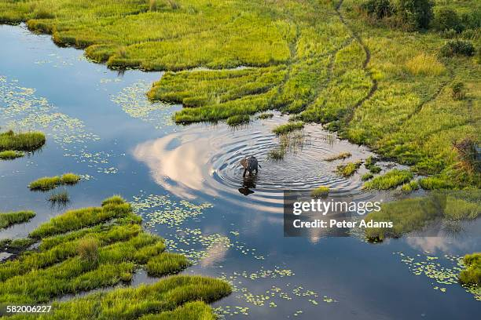

Why the Okavango??
Okavango, the river that never finds the Sea
The Okavango Delta or Okavango Grassland is a vast inland delta in Botswana formed where the Okavango River reaches a tectonic trough at an elevation of 930–1,000 m (3,050–3,280 ft)[2] in the central part of the endorheic basin of the Kalahari Desert.
It is a UNESCO World Heritage Site as one of the few interior delta systems that do not flow into a sea or ocean, with a wetland system that is largely intact.[3] All the water reaching the delta is ultimately evaporated and transpired. Each year, about 11 km3 (2.6 cu mi) of water spreads over the 6,000–15,000 km2 (2,300–5,800 sq mi) area. Some flood waters drain into Lake Ngami.[4] The area was once part of Lake Makgadikgadi, an ancient lake that had mostly dried up by the early Holocene.[5]